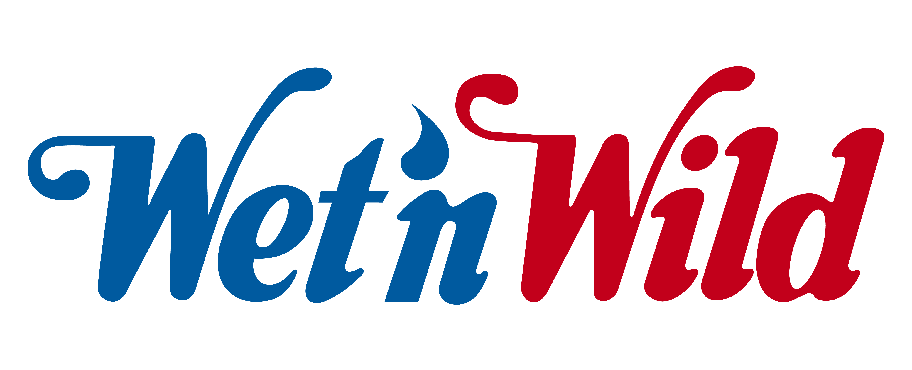

Experiencia
Experiencia

2021 - 2024
Experiência em fornecer suporte técnico abrangente para colaboradores internos e pontos
de vendas (PDVs) em operação em um parque aquático, tanto de forma remota quanto presencial.
Especializo-me em resolver uma variedade de demandas, incluindo:
-
- Instalação, implantação e manutenção de hardware (desktops, notebooks e impressoras) e
periféricos
de
computador.
-
- Configuração de perfis de colaboradores no Active Directory, e-mail, ramais e VPN.
-
- Suporte abrangente a aplicativos, softwares e sistemas de PDV e ERP utilizados pela empresa
(VOLPE
e
VIXEN).
-
- Monitoramento e gerenciamento completo da operação, incluindo rede de computadores, links de
internet,
funcionamento de servidores e aplicações utilizadas no parque, além das vendas.
-
- Administração de ativos (Switches, SATs, periféricos, softwares, etc.) e controle de
pagamentos
relacionados à área de TI.
-
- Colaboração com serviços terceirizados de outras empresas para o funcionamento eficaz e
implementação
de melhorias para o dia a dia da empresa.
Além de demandas pontuais relacionadas à infraestrutura e desenvolvimento de software
na
parte de
Front-end com JavaScript..

2013 - 2021
Experiência de quase 9 anos em entrada de dados financeiros, conciliação bancária e elaboração de
relatórios gerenciais. Responsável pela emissão de notas fiscais, entrega de obrigações tributárias, e
assessoria em planejamento tributário e gestão financeira. Colaborei na preparação de lançamentos
contábeis e apliquei políticas contábeis na prática, além de auxiliar em serviços administrativos
simples, como separação de documentos, orientando na abertura e encerramento de empresas, monitorando
possíveis alterações de dados e
notificando órgãos responsáveis.